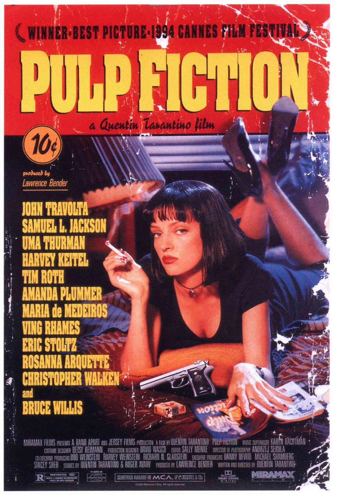

| Name |
Description |
Trailer |
| The Truman Show |
Truman Show has to be the most 4th-wall-breaking, thought-provoking movie of this list. It details the
ordinary life of an insurance salesman, Truman Burbank, although his life is not as ordinary as he
thinks it is. Utterly unaware of the thousands of cleverly hidden cameras watching his every move, for
nearly three decades, Truman's entire existence pivots around the will and the wild imagination of the
ruthlessly manipulative television producer, Christof. Truman soon realises the existence of patterns in
his life that repeat day in and day out, and soughts to discover its origin, and the meaning of his
whole life, if it had any at all. |
 |
| Shawshank Redemption |
Starring Tim Robbins and Morgan Freeman, this movie is not only one of the most critically acclaimmed of
this list, but also one of the most touching. It tells the story of a former successful banker as a
prisoner in the gloomy jailhouse of Shawshank, after being found guilty of a crime he did not commit.
The film portrays his unique way of dealing with his new, torturous life. Along the way he befriends a
number of fellow prisoners, most notably a wise long-term inmate named Red. Full of thoughtful bits, and
plot twists, it is surely to be an enjoyable experience for anyone who watches it. |
 |
| Interstellar |
As a sucker for space movies, I couldn't bring myself to not include this one on the list. Interstellar
is thought-provoking, slow-burning and just overall amazing. The movie revolves around Earth's future,
as it has been riddled by disasters, famines, and droughts; as such, an astronaut by the name of Cooper
is called out to do the only thing that will save humanity, Interstellar travel. As they discover a new
wormhole in space, Cooper discovers that everything happening on Earth might all be connected to itself,
like a circle. If you only watch one of these movies, please make it this one. |
 |
| Moonlight |
Grammy award winning for a reason. Moonlight is a story about a young African-American who man grapples
with his identity and sexuality while experiencing the everyday struggles of childhood, adolescence, and
burgeoning adulthood, divided into three time periods: young adolescence, mid-teens and young adulthood.
Chiron (the main character) is a shy, withdrawn child largely due to his small size and being neglected
by his mother, who is more concerned about getting her fixes and satisfying her carnal needs than taking
care of him. Because of these issues, Chiron is bullied, the slurs hurled at him which he doesn't
understand beyond knowing that they are meant to be hurtful. Besides his same aged Cuban-American friend
Kevin, Chiron is given what little guidance he has in life from a neighborhood drug dealer named Juan,
who can see that he is neglected, and Juan's caring girlfriend Teresa, whose home acts as a sanctuary
away from the bullies and away from Paula's abuse. |
 |
| Pulp Fiction |
Likely the most popular movie on this list, with the most star-ridden cast of the list, from names like
director Quentin Tarantino, to John Travolta, Uma Thurman, Samuel L. Jackson, and Bruce Willis. Jules
Winnfield (Samuel L. Jackson) and Vincent Vega (John Travolta) are two hit men who are out to retrieve a
suitcase stolen from their employer, mob boss Marsellus Wallace (Ving Rhames). Wallace has also asked
Vincent to take his wife Mia (Uma Thurman) out a few days later when Wallace himself will be out of
town. Butch Coolidge (Bruce Willis) is an aging boxer who is paid by Wallace to lose his fight. The
lives of these seemingly unrelated people are woven together comprising of a series of funny, bizarre
and uncalled-for incidents. The acting alone should warrant a place on any list of greatest movies of
all time, it is surreal. |
 |